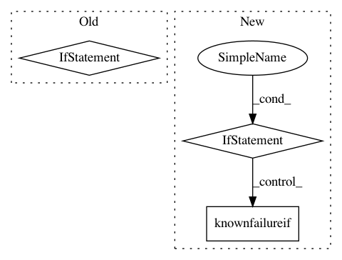

f3c73058f769fde0679c377cdf5b3f6754628313,scipy/stats/tests/test_fit.py,,check_cont_fit,#Any#Any#,35
Before Change
est = distfn.fit(rvs) //,*arg)
truearg = np.hstack([arg,[0.0,1.0]])
diff = est-truearg
if np.any((np.abs(diff) - diffthreshold) > 0.0):
txt = "parameter: %s\n" % str(truearg)
txt += "estimated: %s\n" % str(est)
txt += "diff : %s\n" % str(diff)
raise AssertionError("fit not very good in %s\n" % distfn.name + txt)
if __name__ == "__main__":
import nose
//nose.run(argv=["", __file__])
nose.runmodule(argv=[__file__,"-s"], exit=False)
After Change
xfail = not int(os.environ["SCIPY_XFAIL"])
except:
pass
if xfail:
msg = "Fitting %s doesn"t work reliably yet" % distname
msg += " [Set environment variable SCIPY_XFAIL=1 to run this test nevertheless.]"
dec.knownfailureif(True, msg)(lambda: None)()
distfn = getattr(stats, distname)
truearg = np.hstack([arg,[0.0,1.0]])
diffthreshold = np.max(np.vstack([truearg*thresh_percent,
In pattern: SUPERPATTERN
Frequency: 3
Non-data size: 3
Instances
Project Name: scipy/scipy
Commit Name: f3c73058f769fde0679c377cdf5b3f6754628313
Time: 2013-05-01
Author: pav@iki.fi
File Name: scipy/stats/tests/test_fit.py
Class Name:
Method Name: check_cont_fit
Project Name: scipy/scipy
Commit Name: bdfec4db39e74482b7d64f1157784e22d13d30a9
Time: 2013-06-07
Author: blake.a.griffith@gmail.com
File Name: scipy/sparse/tests/test_base.py
Class Name: _TestCommon
Method Name: test_rmul_scalar
Project Name: scipy/scipy
Commit Name: bdfec4db39e74482b7d64f1157784e22d13d30a9
Time: 2013-06-07
Author: blake.a.griffith@gmail.com
File Name: scipy/sparse/tests/test_base.py
Class Name: _TestCommon
Method Name: test_mul_scalar